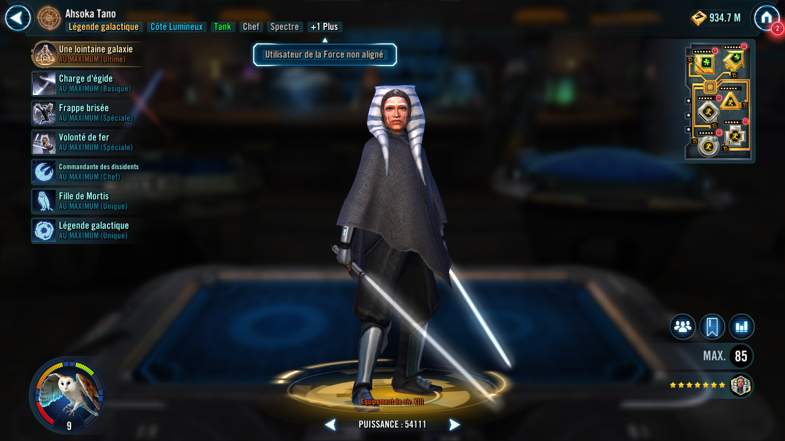
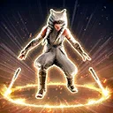
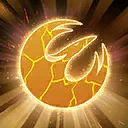

Requires 100% Ultimate Charge to activate.
Ultimate Charge: Ahsoka Tano gains 30% Ultimate Charge whenever an ally uses Reunite, 30% Ultimate Charge whenever Huyang gains any version of History of the Galaxy, 6% Ultimate Charge whenever she uses a Special ability, and 6% Ultimate Charge whenever an ally with Morai's Wisdom uses a Special ability.
Reset the cooldown of all allies, and set the cooldown of all enemies to their max, which can't be resisted.
Spectre allies recover 50% Health and Protection. Remove Exile from a random ally, and a random Spectre ally who didn't already have it gains Morai's Wisdom until the end of battle which can't be copied, dispelled, or prevented. Ezra Bridger (Exile) gains 10 stacks of Purrgil Migration.
Target enemy is Exiled for 2 turns, which can't be copied, dispelled, or resisted.
This ability transforms into Relentless Redoubt
Relentless Redoubt: Requires 50 % Ultimate Charge to activate.
The other strongest Spectre ally gains Deflective Ward, which can't be copied, dispelled, or prevented until the end of the encounter.
Whenever an ally with Deflective Ward takes damage from an enemy, Deflective Ward expires and the enemy who damaged them is inflicted with 2 stacks of Off Balance for 1 turn, which can't be resisted, and if they weren't Stealthed, Deflective Target. Whenever Ahsoka uses an ability during her turn, Deflective Target is removed from the target enemy and Ahsoka takes a bonus turn. If the target did not have Deflective Target, it is removed from all remaining enemies. Ahsoka can ignore taunt effects when targeting enemies with Deflective Target. Whenever Ahsoka is damaged by an enemy, at the end of that turn she dispels Deflective Ward from a random ally.
- 50% Ultimate Charge: Ahsoka recovers 25% Health and Protection, and all Light Side allies gain 10% Mastery until the end of battle
- 75% Ultimate Charge: Ahsoka recovers an additional 25% Health and Protection, and all Light Side allies gain an additional 20% Mastery until the end of battle; the strongest and weakest other Spectre ally who didn't already have it gain Deflective Ward which can't be copied, dispelled, or prevented until the end of the encounter; inflict Ability Block on target enemy for 1 turn, which can't be evaded or resisted
- 100% Ultimate Charge: Ahsoka recovers an additional 50% Health and Protection, all Light Side allies gain an additional 30% Mastery until the end of battle, and all other Spectre allies who didn't already have it gain Deflective Ward which can't be copied, dispelled, or prevented until the end of the encounter; inflict Ability Block on target enemy for 1 turn, which can't be evaded or resisted
Deflective Ward: Damage received is reduced to 1
Deflective Target: Ahsoka can ignore taunt effects to target this character, and takes a bonus turn after using an ability while targeting this unit; dispels if this character Stealths
Deal Physical damage to target enemy twice and dispel all buffs on them. Gain 5% bonus Protection (stacking) until the end of the encounter. If Ahsoka has Perfect Defense, increase its duration by 1.
The weakest Light Side ally recovers 10% Health and Protection.
Deal Physical damage and inflict target enemy with 2 stacks of Off Balance until they are damaged by an attack, which can't be copied, dispelled, or resisted and Armor Shred until the end of the battle. Light Side allies recover 5% Health and Protection, doubled for Spectre allies.
Ahsoka dispels all debuffs on herself and Taunts for 2 turns. Dispel Resilient Defense from all allies. For each stack of Resilient Defense dispelled, Ahsoka gains 10% Defense and Mastery (stacking) until the end of the battle. If Ahsoka had Defense Up and Tenacity Up, she dispels them and gains Perfect Defense for 2 turns. If she already has Perfect Defense, increase its duration by 2.
Target other ally gains 25% Turn Meter, and if they are a Spectre, they also gain Morai's Wisdom if they didn't already have it until the end of the battle, which can't be copied, dispelled, or prevented.
Morai's Wisdom: +15 Speed; take 10% less damage; take reduced damage from percent Health damage effects; immune to turn meter reduction
Spectre allies have +30% Defense, Mastery, and Offense.
At the start of the battle, all other non-Summon Spectre allies that didn't already have it gain Exile until the end of the battle, which can't be copied or dispelled and they gain the granted ability Reunite. If there is an ally Ezra Bridger (Exile), he gains 25 stacks of Purrgil Migration. If there is not an ally Ezra Bridger (Exile), Spectre allies gain 100% Max Health and Max Protection.
Whenever an ally with Morai's Wisdom uses a Special ability, Ahsoka gains 6% Ultimate Charge. Whenever an ally uses Reunite, Ahsoka gains 30% Ultimate Charge. Whenever Huyang gains any version of History of the Galaxy, Ahsoka gains 30% Ultimate Charge.
Whenever a Spectre ally has a buff dispelled on them, they gain 10% Turn Meter and 5% Mastery (stacking) until the end of the battle.
Whenever an enemy gains Protection Up, Spectre allies gain 15% Offense (stacking) until the end of the battle. Whenever an enemy with less than 100% Turn Meter gains bonus Turn Meter, they take True damage, which can't be evaded (this damage can't defeat enemies).
Reunite: Remove Exile from this character and another targeted ally; gain 25% Mastery until the end of battle, and take a bonus turn; this ability is on a shared cooldown between allies who have Reunite and is immune to cooldown manipulation

Remove Exile, gain 25% Mastery until the end of battle, and take a bonus turn; this ability is on a shared cooldown between allies who have Reunite and is immune to cooldown manipulation.
At the start of battle, Ahsoka gains Morai's Wisdom until the end of the battle, which can't be copied, dispelled, or prevented. Ahsoka has 100% counter chance and is immune to Blind and Damage Immunity. When counterattacking, deal True damage to all enemies, which can't be countered.
While Ahsoka has Perfect Defense, she recovers 15% Health and Protection whenever she attacks out of turn.
At the start of each encounter, Ahsoka Taunts for 2 turns.
At the start of each of her turns, Ahsoka has Offense equal to 35% of her Defense until the start of her next turn. Whenever she uses a Special ability, she gains 6% Ultimate Charge.
If all allies were Spectre at the start of battle, whenever an ally is Dazed, they dispel it and gain 15 Speed (stacking), until the end of the battle.
This unit takes reduced damage from percent Health damage effects and massive damage effects. They take massive damage from destroy effects (excludes raid bosses) and are immune to stun effects.
This unit has +10% Max Health and Max Protection per Relic Amplifier level, and damage they receive is decreased by 30%.